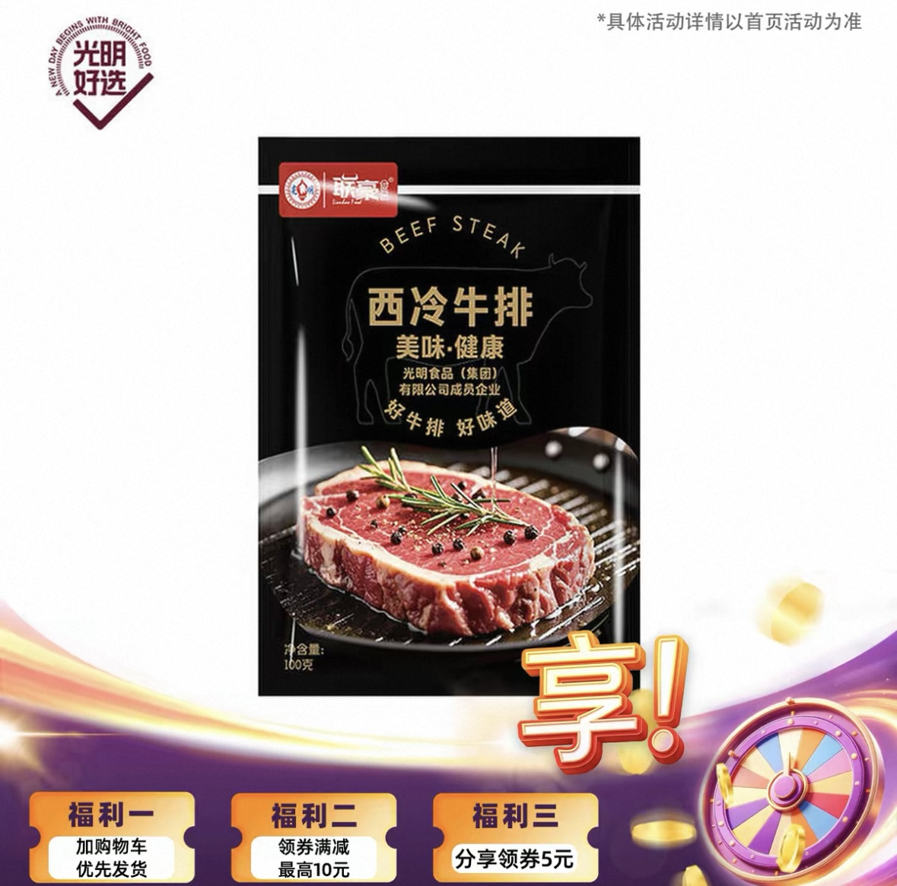
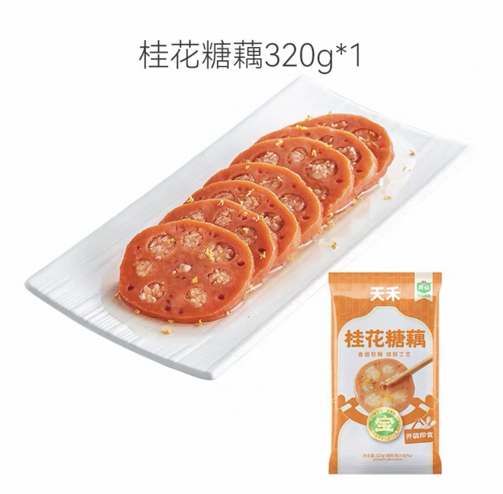
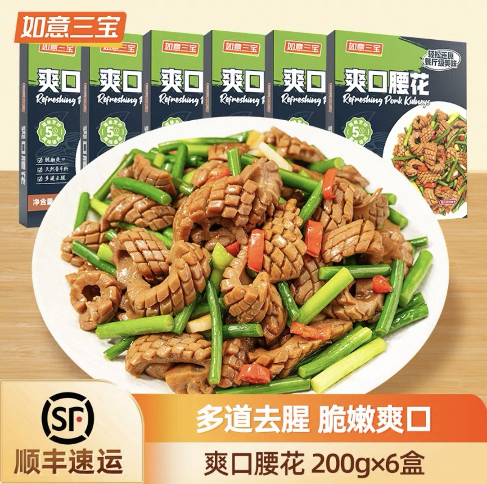
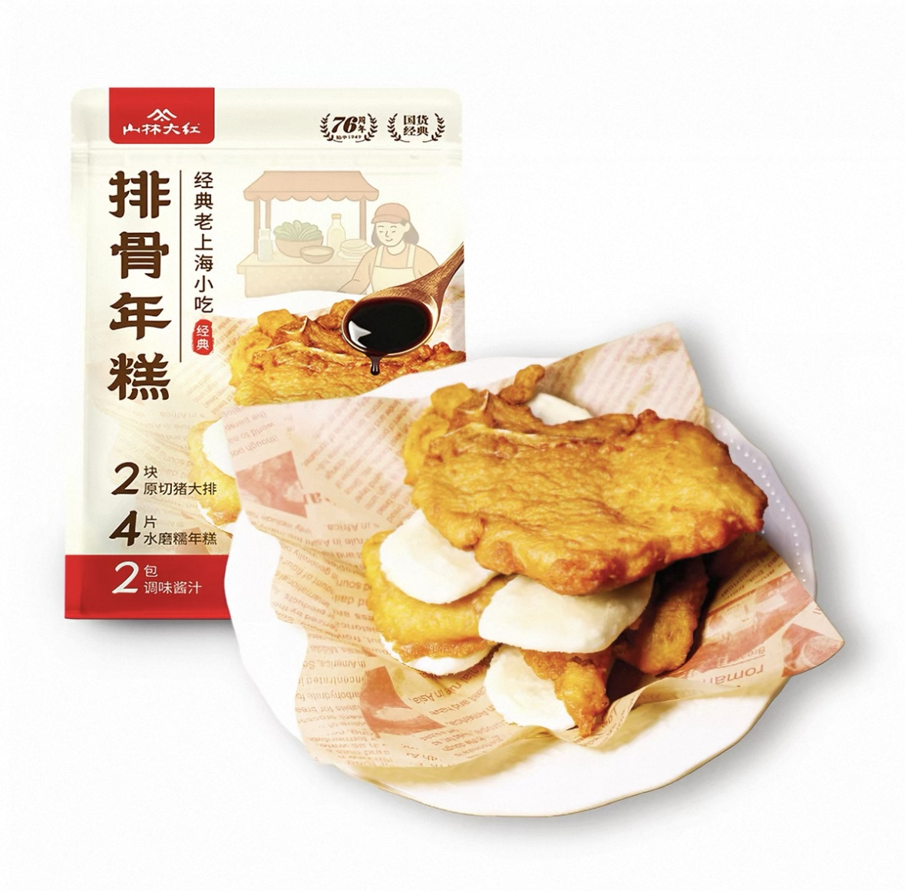

Profile
个人信息
Approach
选品思路
下单逻辑
顾客会不会下单，核心取决于三件事。
1. 顾客有需求
商品要能对应真实需求，或者明确解决某个痛点，顾客才会愿意继续了解。
2. 同品类里品质好
至少要达到顾客的使用标准，品质不过关，价格再低也无法形成稳定成交。
3. 同品质里价格更有优势
在品质相近的前提下，价格更有吸引力，顾客才更容易完成最终决策。
执行步骤
对应的实际工作步骤
01
市场调研
发现或挖掘顾客需求，确认产品卖点能否对应顾客痛点。
02
筛选多家供应商对比
对比同品类多家供应商，找到品质更稳定、标准更达标的产品。
03
谈判压价
在品质成立的基础上争取更优价格，把优惠空间留给顾客。
Context
直播场景与人群画像
直播场景
上海私域直播场景
直播间以门店熟客关系为基础，具备较强信任优势，但也意味着选品必须兼顾用户接受度和直播间表达效率。
核心客群
上海 55 岁以上中老年人
用户更关注熟悉感、可信感、家庭食用场景和价格合理性，购买决策逻辑与年轻流量直播间存在明显差异。
流量规模
直播间在线人数约 4000-5000 人
这不是依赖超大公域流量的成交场，因此案例结果更能体现选品判断、内容承接和项目推进能力。
Role
核心价值在于把直播结果转化为可复用的选品判断方法。
判断人群与价位带匹配度
识别熟悉感与场景感强的商品
用结果验证判断有效性
Launch Matrix
主导直播间每月产品上新矩阵。
围绕月度选品节奏持续推进新品测试、结果验证和爆款沉淀，以稳定上新效率支撑直播间品类更新。
Matrix
爆品总览矩阵




Cases
商品案例拆解
Case 01
联豪西冷牛排
从非核心品类引流小品，到首播破千的代表案例
销量基线
非滋补门店商品引流小品常规销量在 100-200，同价位商品常规销量在 200-300。
需求判断
牛排具备家庭改善型消费属性，能够对应用户对品质型肉类、节日聚餐和尝鲜的需求。
品质判断
商品能够满足顾客对肉类品质、食用体验和家庭餐桌场景的基本使用标准。
价格判断
在品质成立的前提下，商品价格与直播间同价位带相比具备成交吸引力，能够支撑放量。
结果
首播销量破千，明显高于既有销量水平，是整组案例中最具代表性的结果型商品。
Case 02
荷仙桂花糖藕
用熟悉感和家庭场景支撑稳定高销量
销量基础
该类传统甜品在中老年客群中更容易被理解，具备相对稳定的需求基础。
需求判断
商品高度贴合上海及江南饮食记忆，能够对应家庭点心、熟悉口味和日常分享场景。
品质判断
只要口感、配料和基础品质达标，顾客对这类熟悉型商品的接受门槛通常较低。
价格判断
商品不依赖极低价格刺激，而是通过合理价格与熟悉感结合完成转化。
结果
直播间卖出 500+，属于非常亮眼的传统甜品类商品表现。
Case 03
如意三宝火爆腰花
同价位 100+ 的商品，卖出 600+ 的高反差结果
销量基线
同价位商品在直播间常规销量大概在 100+，并不容易自动形成强结果。
需求判断
商品对应的是下饭菜、家常菜、重口味菜品场景，顾客容易快速建立食用联想。
品质判断
菜品型商品的关键在于呈现效果和基础口感标准是否能够让顾客认可。
价格判断
在同价位商品中，这类具备更强内容表达力和菜品感的产品更容易放大价格优势。
结果
实际销量达到 600+，属于明显高于常规水平的高倍数增长案例。
Case 04
山林大红排骨年糕
把本地生活记忆转化成更高的成交结果
销量基线
同价位商品常规销量在 100 以内，这类商品通常不容易自然跑成强结果。
需求判断
商品能够对应上海中老年客群对本地经典小吃、熟悉味道和家庭餐桌的明确需求。
品质判断
在本地经典小吃认知下，顾客会关注是否达到熟悉味型和基础食用品质标准。
价格判断
商品在满足本地小吃期待的前提下，若价格合理，更容易突破同价位商品常规销量。
结果
销量达到 300+，在该价位带中属于明显超常发挥。
Projects
项目经验
Project 01
卡券品类首单——蛋卡项目
背景
直播间缺乏高频复购、可到店核销的品类，需要通过卡券类产品提升到店率并筛选高价值客户。
任务
从 0 到 1 引入首款卡券产品，独立负责某品牌可生食鸡蛋蛋卡项目的完整流程。
行动
完成门店调研、供应商寻源与谈判签约、订货与库存管理、售后 SOP 搭建，以及 150+ 门店核销培训。
结果
成功拓宽直播间品类结构，售出 13 单三次卡（客单价 300 元）及 3 单六次卡（客单价 600 元），购卡用户到店频次分别提升 200% 与 500%，全部沉淀为高价值潜在客户，其中 1 位用户后续成功转化客单价 10 万元。
Project 02
乳制品溯源与模式研究专项（总经理随行）
品类战略参与
参与公司高端短保品类战略布局，随同总经理实地溯源四家头部及区域乳企，完成牧场——工厂——成本——工艺全链路调研。
供应链成本建模
系统掌握原料成本、包材成本、OEM 成本、巴氏杀菌工艺、均质浓度、热处理工艺等核心供应链参数，形成可复用的乳品选品成本模型。
用户与场景验证
独立完成门店用户试饮调研及现打奶设备模式调研，为短保品类提供用户需求与场景验证依据。
评估框架沉淀
沉淀完整的乳制品选品评估框架与供应链研判方法，可直接复用于后续生鲜 / 短保品类的选品与落地。
Review
复盘总结
复盘结论 01
在私域直播场景中，商品是否成交首先取决于需求是否真实存在，卖点是否能够清晰对应用户痛点。
复盘结论 02
同品类比较中，品质是成交底线。只有在满足顾客使用标准的前提下，商品才有被持续验证和放量的基础。
复盘结论 03
在品质成立后，价格优势会直接影响成交效率。价格不一定需要最低，但必须让顾客形成“值得买”的判断。
复盘结论 04
从市场调研、供应商筛选到谈判压价，再到结果验证，选品本质上是一个可复盘、可迭代、可持续优化的闭环过程。